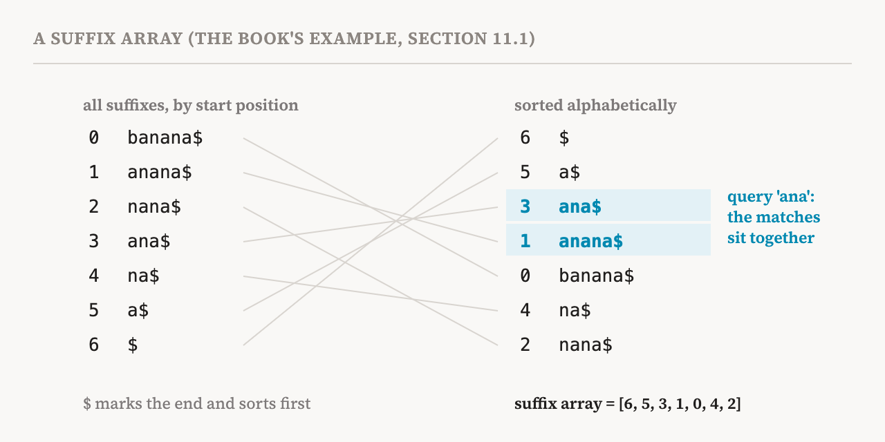
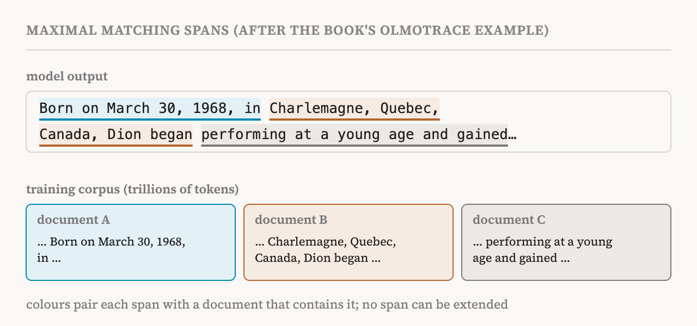

Parts 26 to 28 watched how a model changes as it trains. This part begins the book's eleventh chapter, on training data attribution (TDA), and covers its introduction and section 11.1 (pages 93–96).
The chapters before this one studied the internal features and components that produce a behaviour, and how they interact and develop. Training data attribution moves the focus from the model's insides to its training data. It searches for the training samples that strongly shaped a behaviour.
Why look at the data
The book lists applications that include identifying influential training samples, detecting train–test leakage, where test material has slipped into the training data so that a good score may reflect memory rather than skill, and diagnosing a model's failures without retraining it. By the book's own criteria from part 1, TDA is not generally a mechanistic method, because it does not open up the computation. But it can complement mechanistic work in many ways. For example, by showing how specific training samples shape a harmful behaviour, TDA could make it possible to filter the training data so that the behaviour, or even its internal mechanism, never forms when the next generation of models is trained. This was the first open question at the end of part 28.
With that use in mind, the chapter focuses on post-hoc methods: given a trained model, link its behaviour to its training samples. It leaves out interventions in the data pipeline itself, such as filtering pretraining corpora, rebalancing how groups of people are represented, or scheduling what gets memorised.
The book divides TDA into two complementary approaches. Verbatim data attribution detects explicit memorisation by finding exact or near-exact string matches between a model's output and its training corpus; such searches can scale to trillions of tokens with techniques such as suffix arrays and infini-gram models. Gradient-based data attribution, the subject of part 30, estimates how training samples affect the model's parameters and predictions, and can capture influential samples that are never reproduced word for word. The two give separate views. One answers the question "Did the model answer this by rote memorisation of a training sample?" The other answers "How much did this training sample influence this behaviour of this model?"
Searching the corpus
Earlier corpus search tools, such as the ROOTS Search Tool and GAIA Search, both from 2023, established the practice of querying pretraining corpora for transparency and for exploring the data. OLMoTrace, from 2025, scales this up to trillions of tokens. It was built for the OLMo models, whose training data are public, and it combines three ingredients: suffix arrays, infini-gram models, and the extraction of maximal matching spans. The book notes that this makes OLMoTrace less a data-attribution method in the sense of influence functions and more a retrieval tool for finding content the model may have memorised.
Suffix arrays
A suffix of a string is its ending from some position onwards. The suffix array of a string lists the starting positions of all its suffixes, sorted in alphabetical order. The book's example is the word "banana", with a final $ that marks the end and sorts before every letter. Its seven suffixes are banana$ starting at position 0, anana$ at 1, nana$ at 2, ana$ at 3, na$ at 4, a$ at 5, and $ at 6. In alphabetical order they run $, a$, ana$, anana$, banana$, na$, nana$, so the suffix array is 6, 5, 3, 1, 0, 4, 2.

Why does this help? Every substring of the text is the beginning of some suffix. Once the suffixes are sorted, all occurrences of a query sit next to each other in the list, as words starting with the same letters do in a dictionary, and a search can find them by repeatedly halving the list. In the book's terms, for a text of length T₁ and a query of length T₂, this takes on the order of T₂ × log T₁ steps instead of the T₂ × T₁ of checking every position. As a rough sense of scale, for a trillion tokens log T₁ is only about 40, which is what makes searching trillions of tokens practical.
Infini-grams
An n-gram model, one of the oldest kinds of language model, predicts the next token from counts in a corpus: how often the previous n−1 tokens were followed by each possible next token. An infini-gram model removes the fixed n. To predict the next token, it finds the longest run of preceding tokens that appears anywhere in the corpus, counts how often that run is followed by the token in question, and divides by how often the run appears at all. In the book's formula, the probability of a token given everything before it is the count of the longest matching stretch including the token, divided by the count of the same stretch without it. Infini-grams are built on suffix arrays, which make such counts fast across huge corpora.
Maximal matching spans
Given a model's output and a training corpus, a maximal matching span is a stretch of consecutive tokens with three properties. It appears verbatim at least once in the training data. It does not break words, or include stray delimiters such as full stops or line breaks, except at its edges. And it is not contained in a longer stretch that has the first two properties.
OLMoTrace finds these spans in four steps. It tokenises the model's output. For each token that starts a new word, it queries the suffix array, using infini-gram, to find the longest stretch beginning there that also appears in the training corpus. It adjusts the boundaries so that spans do not break words or include delimiters. Finally, it keeps only the maximal spans, those not contained in longer matches.
The book's example is an output about the singer Celine Dion. The spans found include "Born on March 30, 1968, in", "Charlemagne, Quebec, Canada, Dion began", "Her career took off when she won the 1988" and "Eurovision Song Contest with the song 'Ne". Each is a stretch of the output that occurs word for word in the training corpus, which links the output directly to the documents it may have been memorised from.

What a match does not explain
The book is clear about the limits of this as a tool for mechanistic interpretability. Verbatim attribution excels at factual memorisation but struggles with outputs that are composed or synthesised. For translation, poetry or reasoning, OLMoTrace and other exact-matching methods can identify stretches of text that appear in the training data, but the matches do not explain how the model combined information from several sources to produce the output.
The book's second example makes both points. Asked to write a short story in Chinese about a girl who loves reading, a model produced a story that begins with a little princess called Xue'er, who has a lovely little fox at her side and likes to sit in a bamboo grove gazing into the distance. OLMoTrace found that opening sentence as a span in the pretraining corpus. Another sentence, saying that she likes reading books on science and technology, psychology and history and takes programming classes in her spare time, matched a span in the post-training data used for instruction tuning. The example shows that OLMoTrace can trace output in other languages back to quite different sources, from pretraining and from post-training. Placed right after the limitation, it also shows the edge of the method: knowing where the two sentences came from says nothing about how the model decided to join them into one story.
Two views of the data
| Approach | Question it answers | Strength and limit |
|---|---|---|
| Verbatim, such as OLMoTrace | Did the model reproduce a training text word for word? | Scales to trillions of tokens; silent on how the pieces were combined |
| Gradient-based, such as influence functions (part 30) | How much did a training example influence this behaviour? | Finds influence without exact matches; approximate and costly |
| Term | Meaning |
|---|---|
| Training data attribution (TDA) | Tracing a model's behaviour back to the training examples that shaped it |
| Train–test leakage | Test material that also appears in the training data |
| Verbatim attribution | Finding exact or near-exact matches between an output and the training data |
| Memorisation | Reproducing training text rather than generating it from general patterns |
| Suffix | The part of a string from some position to the end |
| Suffix array | The starting positions of all the suffixes of a text, in alphabetical order |
| n-gram model | A model that predicts the next token from counts of the previous n−1 tokens |
| Infini-gram | An n-gram model that uses the longest preceding stretch found in the corpus |
| Maximal matching span | A stretch of output found verbatim in the corpus that cannot be extended, with clean edges |
| Post-training data | Data used after pretraining, such as examples for instruction tuning |
Next, part 30 turns to gradient-based attribution: influence functions, which ask how a model would change if one training example counted for a little more.